O Vale do Jequitinhonha costuma ser descrito a partir de vários elementos: a poeira, a aridez, o sol, o calor, o rio, por exemplo, vão formando seu ambiente. Os tropeiros, canoeiros, pescadores, artesãos, lavadeiras, romeiros são alguns de seus personagens sempre lembrados. A junção disso tudo compõe as suas muitas narrativas, forjadas tanto na dureza quanto na delicadeza da existência. São muitas as contradições, próprias de qualquer ambiente humano, muitas as diferenças. Mas tudo está lá, ao longo de um vale de muitos jequitinhonhas.
Os olhos sobre as paisagens vão compondo um mapa de variados tons, das chapadas aos fundos dos vaus, das montanhas de pedra à grande cordilheira, das matas aos cerradões, dos campos rupestres à caatinga, dos diamantes e águas-marinhas ao granito e ao minério de ferro. Grandes distâncias a vencer, caminhos difíceis, casinhas longe de tudo, quase isoladas do resto do mundo, onde se habita um outro espaço-tempo. De outro lado, cidades agitadas pelas multiconexões, juventudes com ânsia de possibilidades.
E tem as ausências, tudo aquilo que no Vale não houve e não há. A longa lista das carências, ali onde a modernidade entendeu de fazer um desvio, embaralha o sentido das coisas, alimenta as incertezas. É onde a vida (ainda) tem de ser produzida pelas próprias mãos. Gerações se sucedem nessa manufatura. Ela é mais que um vestígio do passado, é algo que produz continuamente a vida, que a anuncia, pronuncia e denuncia, na tradução de seus paradoxos.
Neste cenário, a arte de fazer a vida ainda é algo que se aprende e se ensina, mesmo em contextos improváveis, como pequena flor no deserto. Por isso nos espanta essa beleza. Esses fazeres não estão separados das pequenas (mas poderosas) narrativas de cada pessoa. São algo tão variado quanto toda a paisagem, mas têm em comum as sensibilidades e os desejos das gentes, as inteligências populares, misturadas às devoções, às místicas e à vivência mágica dos seus mistérios. Artesãos e artesãs colocam ali sua própria história, e é essa a força criativa de um grande (hiper)texto – mãos e mente integradas.Teria este povo a vida nas mãos?
Fonte: UFMG - Polo Jequitinhonha
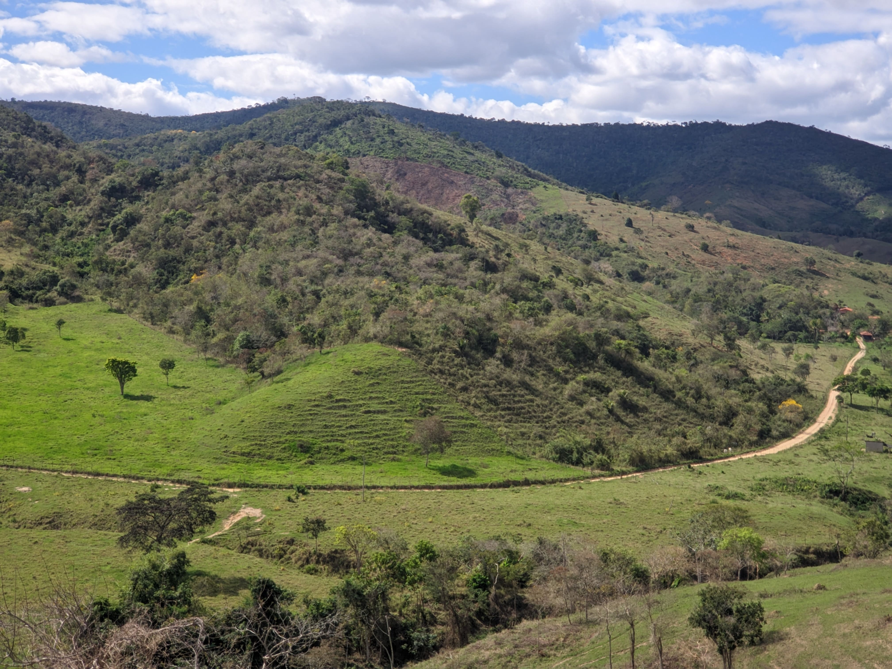
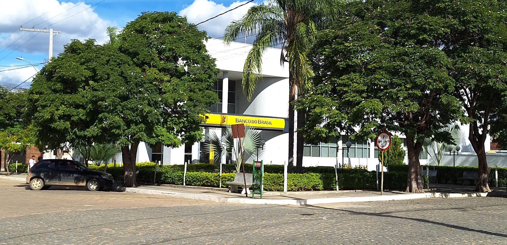
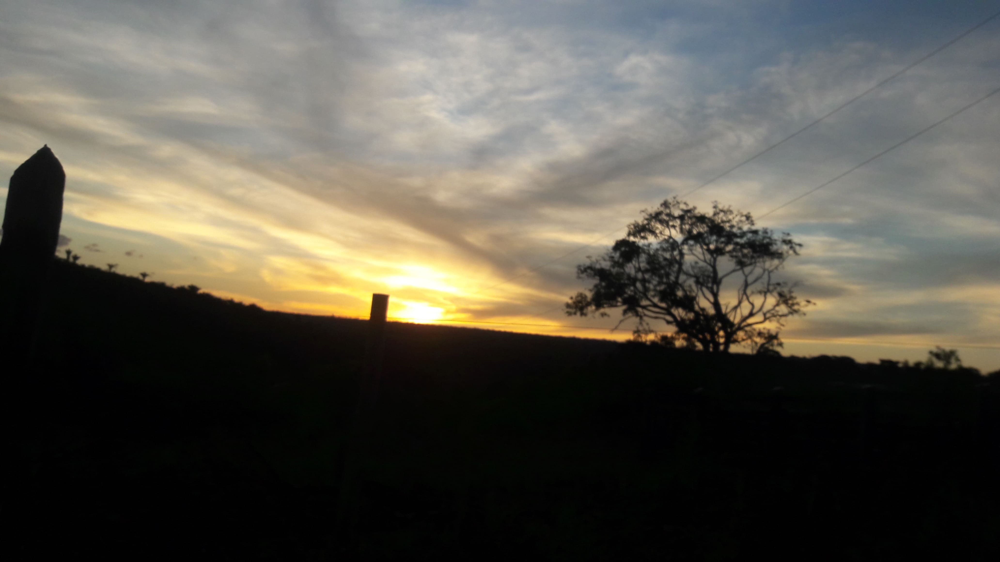
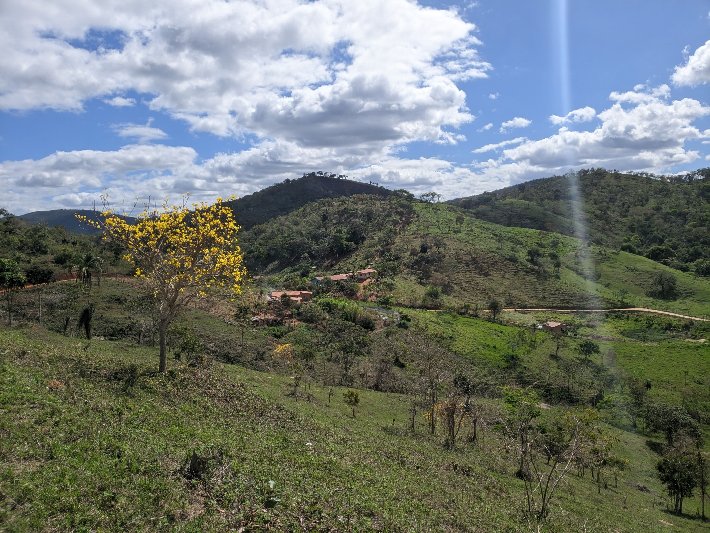
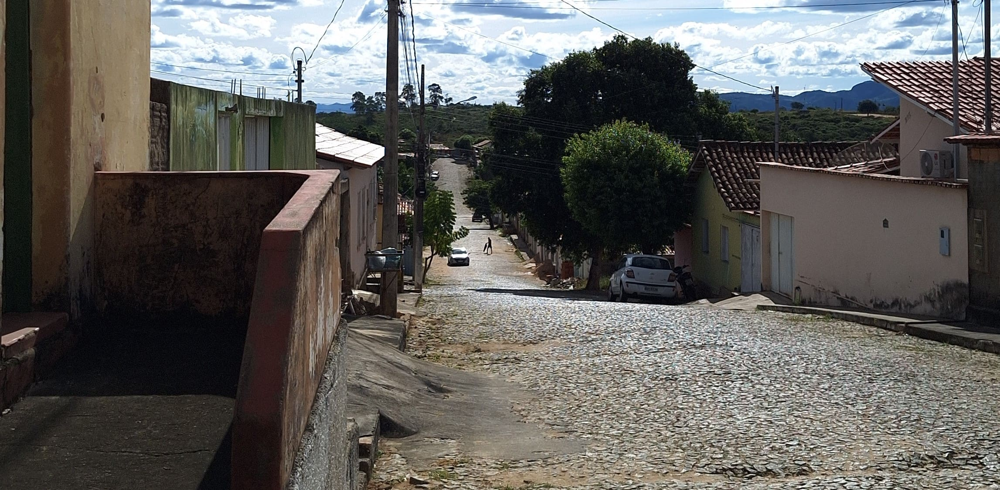
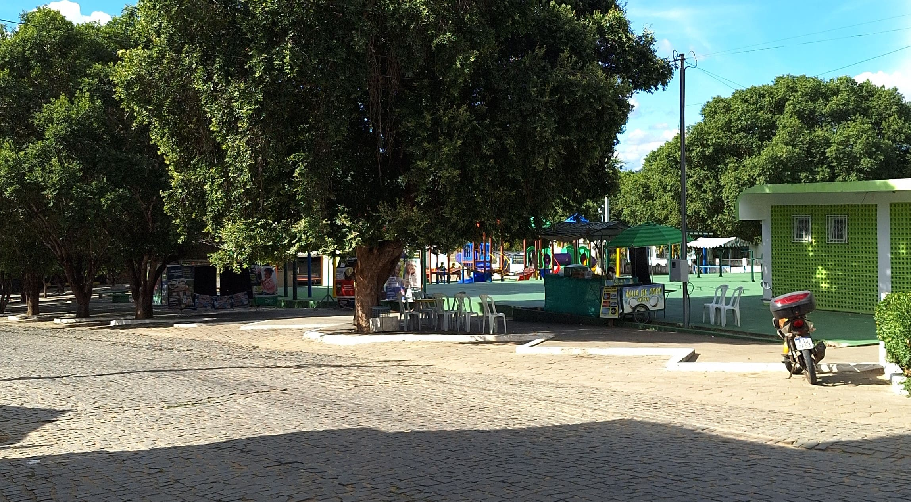
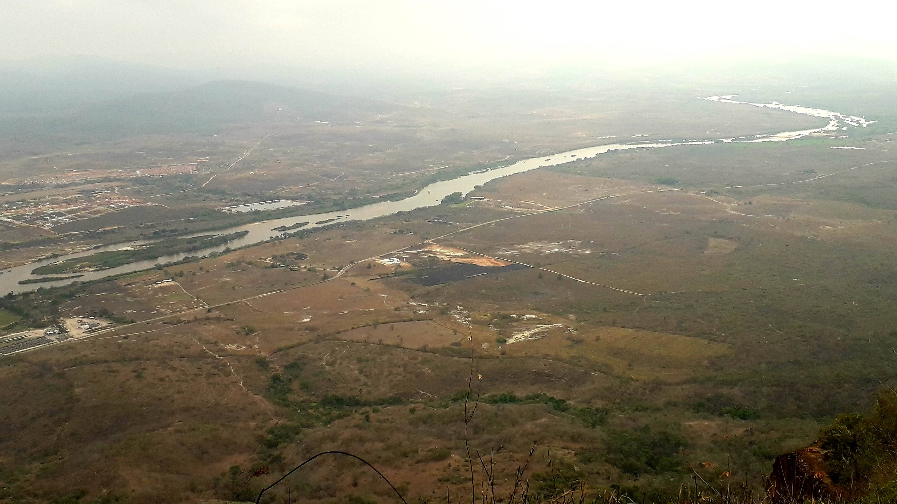
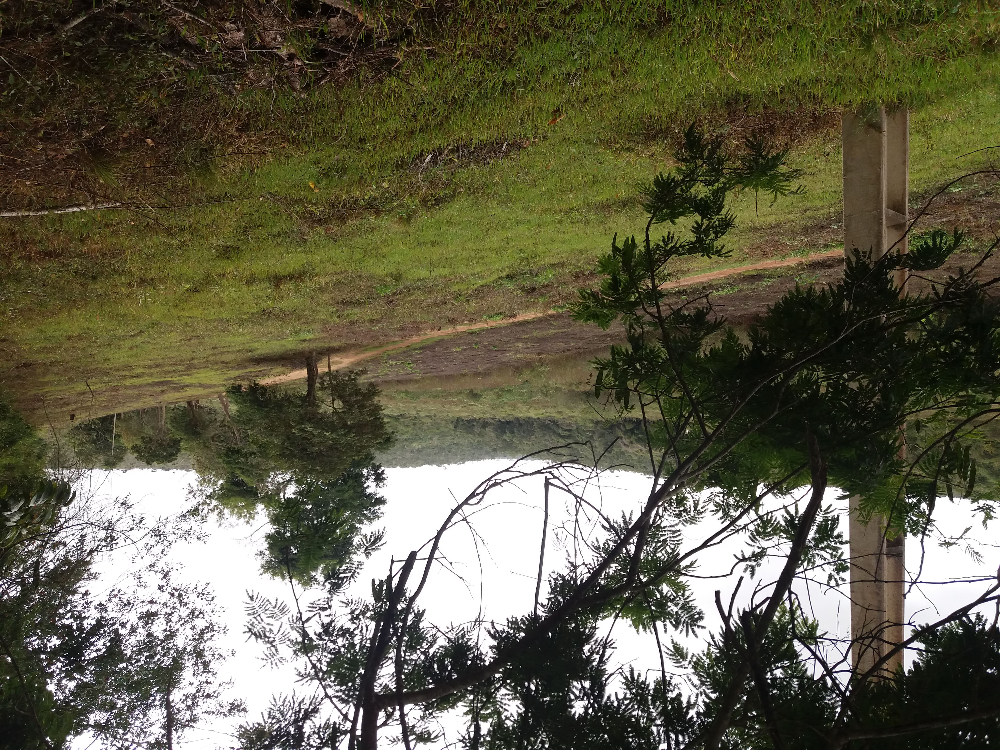
 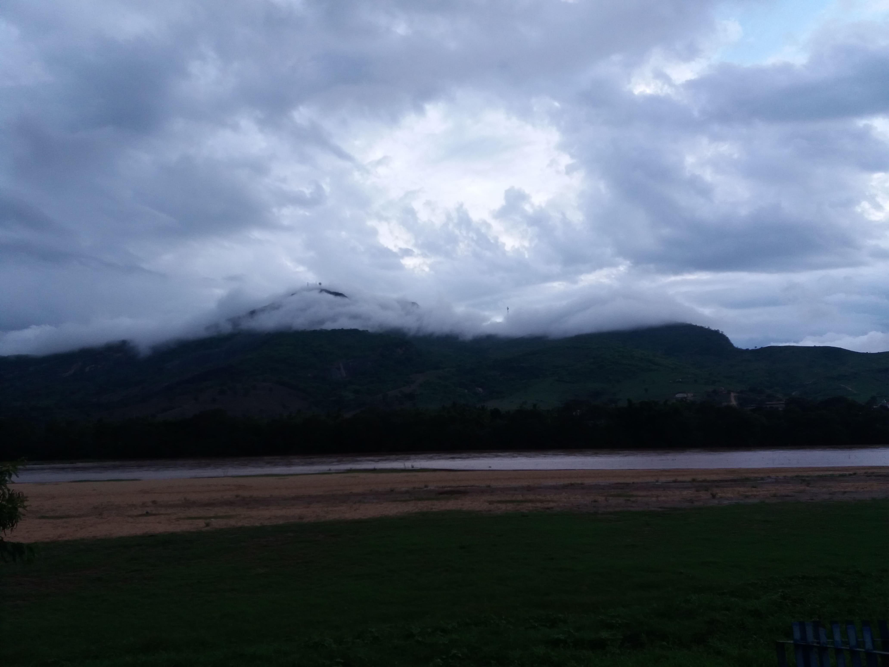
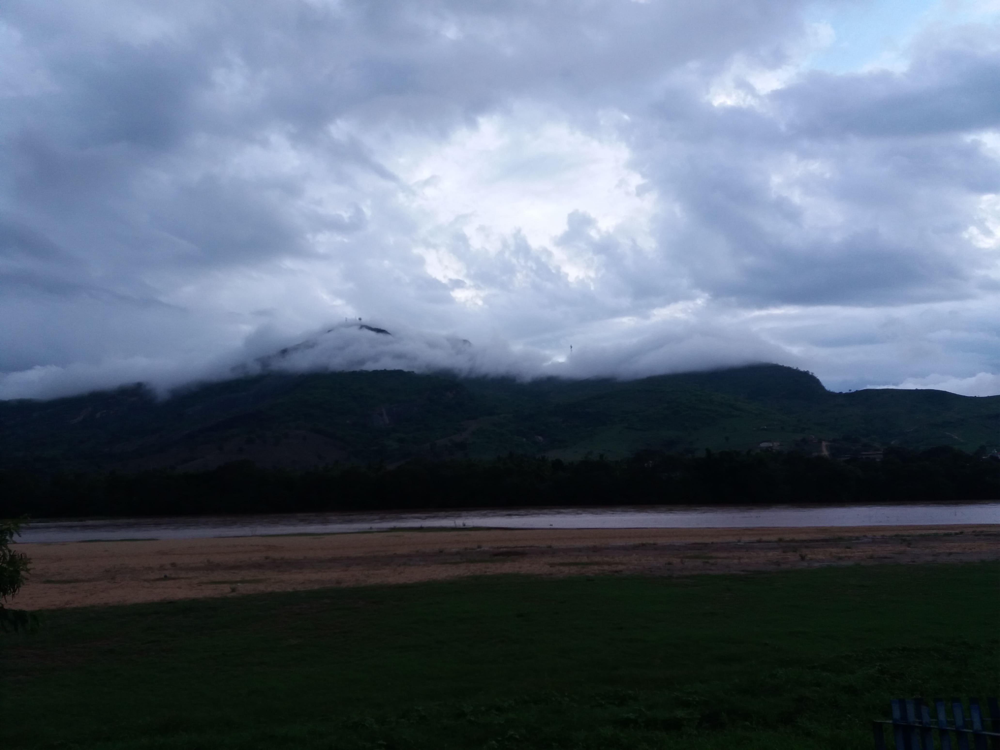
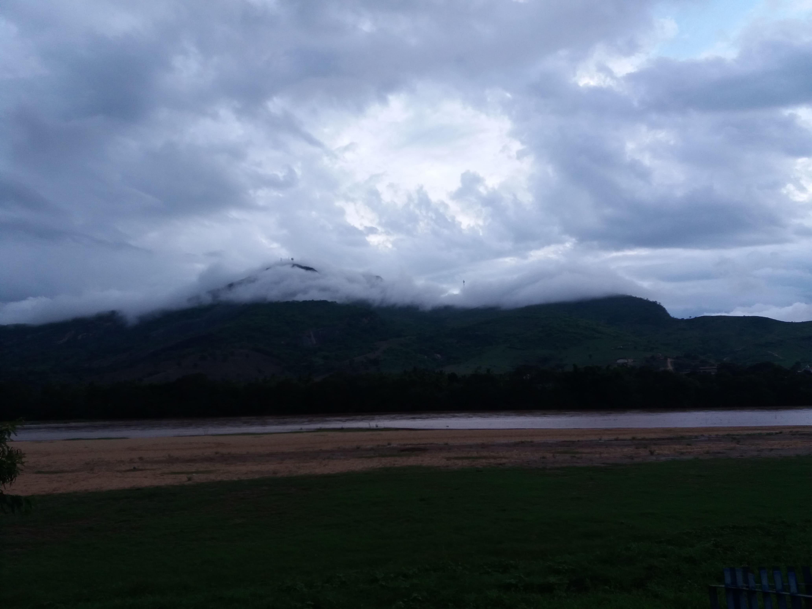